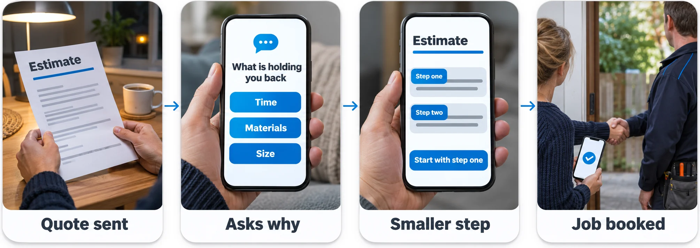
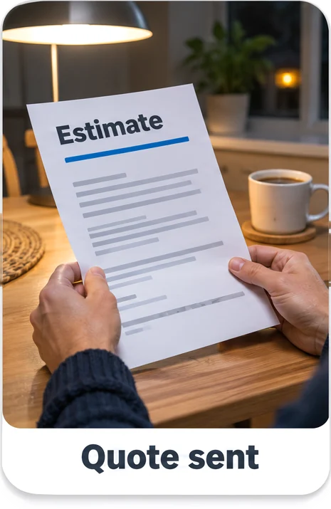
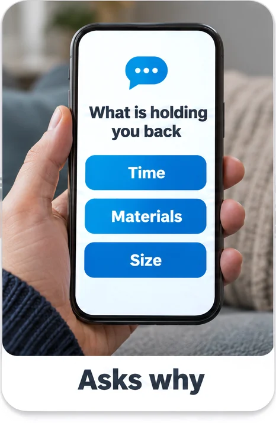
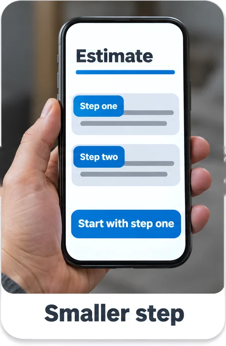
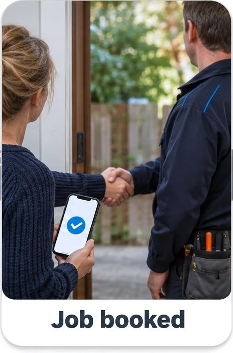

Talk Through Quotes
SalesA bold bet

- 1

I send the quote and the customer reads it at home.
- 2

A helper asks what is holding the customer back.
- 3

It offers only the smaller steps I already allowed.
- 4

The customer says yes and the job is booked.
Problem
I send the quote, the customer goes quiet, and I never learn why.
What you gain
A stalled quote gets a reply instead of silence, and some of them turn into jobs.
Brings the next customer
A quiet customer gets a gentle talk instead of silence, so more quotes turn into jobs.
Why build it
Quotes that go quiet cost jobs, and this follows up so the provider does not have to.
Who has it
Providers who send estimates by email or text.

Also inside
- One word why
- Answers to common doubts
- Work split in chapters
- See who opened the quote